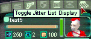
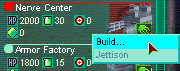
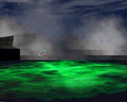

| "Stake Claim" automatically teleports you to your chosen camp.
Hover around your camp until you find a wide area of open land to build on; you cannot
build on some hills. |
 |
| Click the icon that looks like a jellyfish at the right top corner of your
interface. This will bring up your Jitter inventory list; all these Jitters are in your
backpack. |
 |
| Scroll down the list until you find a Nerve Center Jitter. Right click on
it and select "Build." |
 |
| Move your cursor to the playfield and a blinking image of the Nerve Center
will appear beneath the build cursor. Move the image around with the mouse and rotate it
with the "PageUp" key until you like the position. Click on the playfield to
build the Nerve Center. Once the build process has started, it cannot be stopped. |
 |
| Note: the Nerve Center
is the only Jitter that is encoded to build itself; all other Jitters must be built using
other construction facilities.
|